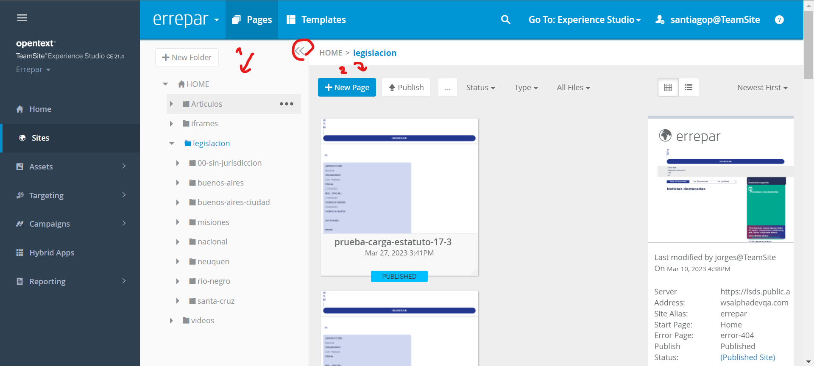
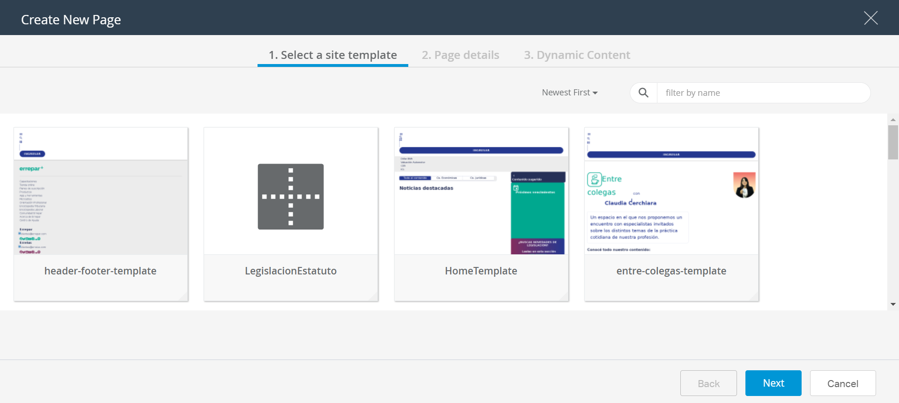
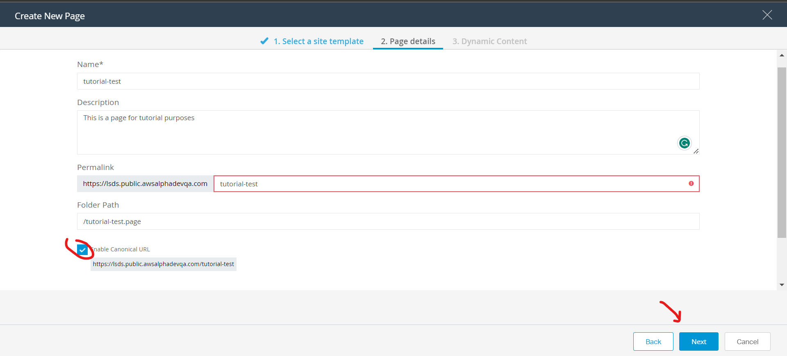
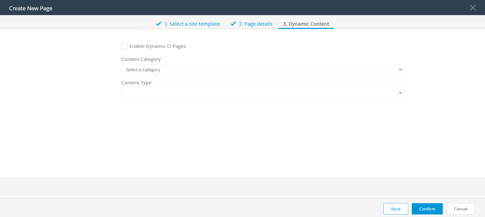
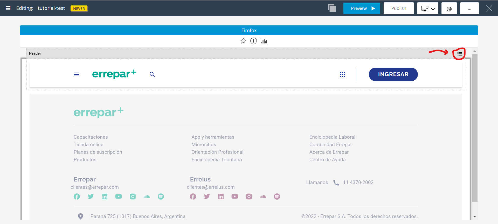
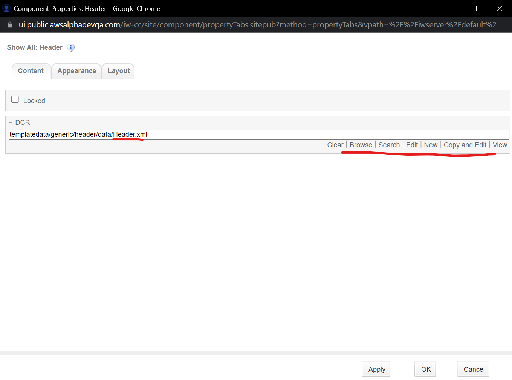
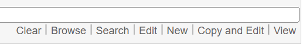

Pages
Introducción
Una page es una instancia de un template. Cada page, es un archivo de extensión .page
Crear una página
- Dirigirse a E Studio/pages
- En la pestaña "Pages" seleccionar la ruta donde guardar la nueva página. En la mayoría de los casos la ruta debe ser "Home" (Esto se ilustra en la imagen del siguiente paso)
- Luego clickear en "+ New Page" 
- Seleccionar el template del cual heredar todas las propiedades, componentes, scripts, hojas de estilo, etc. 
- Click en "Next"
-
Definir nombre, descripción y permalink de la página. El
nombre debe ser en
kebab-case. El permalink permite utilizar una URL friendly pero la página se
publica en dos URLs
Tildar la opción de "Enable Canonical URL". Esto permite que Google no penalice el Sitio por tener la página repetida en dos URLs
Clickear "Next"
 -
En general la siguiente pantalla se deja en blanco
Click en "Confirm"
 - Ahora queda editar los componentes
Editar componentes
Para poder editar un componente este tiene que tener un DCR, de otra manera, el contenido del componente está fijo (hardcodeado) y no se puede modificar desde la vista de edición de la página.
- Desde la vista de edición de la página clickear en el botón superior derecho del componente 
- Esto abrirá la vista de edición del componente. En este caso el componente Header está leyendo su información de un archivo llamado "header.xml". Todas las páginas que utilizan el componente Header, están usando este dcr llamado header.xml como fuente de información con sus links, URLs etc. 
-
Estas son las diferentes opciones que aparecen al editar el
componente:

- "Clear" elimina el vínculo entre esta instancia del componente al archivo .xml que contiene la data del componente.
- "Browse" permite buscar archivos .xml dentro de la ruta designada de donde nutrir el componente.
- "Search" permite buscar entre todos los archivos .xml y seleccionar uno específico para nutrir la instancia actual del componente
- Si vamos a "Edit" podemos modificar desde el DCR este archivo .xsl de donde el header está tomando la información que necesita. Esto afectará a todas las páginas que utilicen el mismo archivo .xml
- Si necesitamos que estos cambios surjan efecto únicamente en esta página podemos ir a "new" para crear un nuevo archivo .xml en blanco basado en el Content Template (DCR). También podemos ir a "Copy and Edit" para duplicar el archivo .xml con toda su data, para después guardarla en un nuevo archivo y editarlo sin modificar ninguna otra página
- Por último "View" permite ver el archivo .xml y toda su información sin riesgo a editarlo accidentalmente.